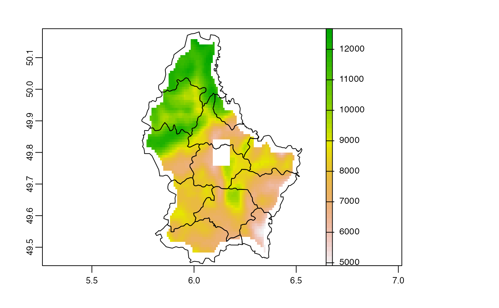
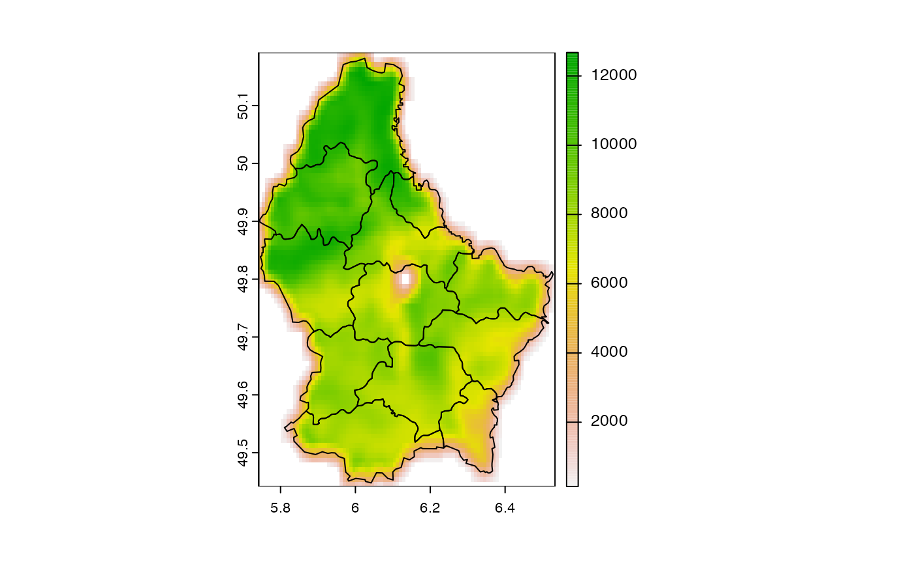
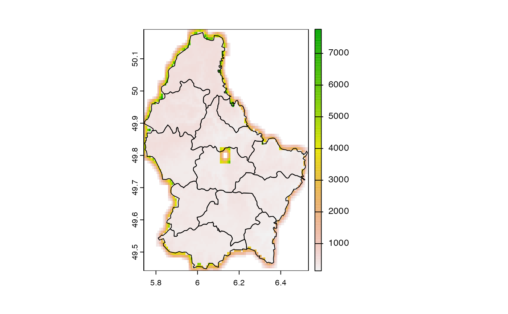
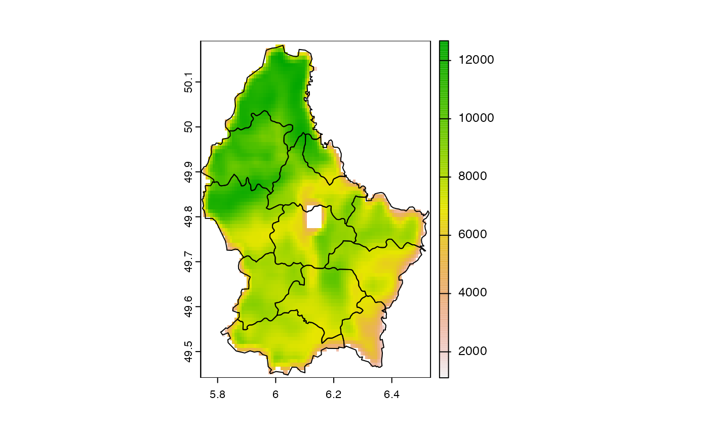

focal.RdCalculate focal ("moving window") values for each cell.
# S4 method for class 'SpatRaster'
focal(x, w=3, fun="sum", ..., na.policy="all", fillvalue=NA,
expand=FALSE, silent=TRUE, cores=1, cpkgs=NULL,
filename="", overwrite=FALSE, wopt=list())SpatRaster
window. The window can be defined as one (for a square) or two numbers (row, col); or with an odd-sized weights matrix. See Details.
function that takes multiple numbers, and returns a numeric vector (one or multiple numbers). For example, mean, modal, min or max
additional arguments passed to fun such as na.rm
character. Can be used to determine the cells of x for which focal values should be computed. Must be one of "all" (compute for all cells), "only" (only for cells that are NA) or "omit" (skip cells that are NA). Note that the value of this argument does not affect which cells around each focal cell are included in the computations (use na.rm=TRUE to ignore cells that are NA for that)
numeric. The value of the cells in the virtual rows and columns outside of the raster
logical. If TRUE, the value of the cells in the virtual rows and columns outside of the raster are set to be the same as the value on the border. Only available for "built-in" funs such as mean, sum, min and max
logical. If TRUE error messages are printed that may occur when trying fun to determine the length of the returned value. This can be useful in debugging a fun that does not work
controls per-block parallelism when fun is a user-supplied R function (the "built-in" funs such as "mean" and "sum" are already multi-threaded via TBB and ignore cores). Can be a positive integer (the number of local PSOCK workers), an existing parallel::cluster, the string "future" to use the currently registered future plan, or a future strategy itself (e.g. future::multisession). The per-block focal-values matrix is split into row-chunks and dispatched across workers
character. Names of R packages to load on each worker when cores > 1 – pass any package that fun depends on
character. Output filename
logical. If TRUE, filename is overwritten
additional arguments for writing files as in writeRaster
focal
The window used must have odd dimensions. If you need even sides, you can use a matrix and add a column or row of NA's to mask out values.
Window values are typically 1 or NA to indicate whether a value is used or ignored in computations, respectively. NA values in w can be useful for creating non-rectangular (e.g. circular) windows.
A weights matrix of numeric values can also be supplied to w. In the case of a weights matrix, cells with NA weights will be ignored, and the rest of the values in the focal window will be multiplied by the corresponding weight prior to `fun` being applied. Note, na.rm does not need to be TRUE if w contains NA values as these cells are ignored in computations.
The "mean" function is a special case, where supplying weights to w will instead calculate a weighted mean.
The "sum" function returns NA if all focal cells are NA and na.rm=TRUE. R would normally return a zero in these cases. See the difference between focal(x, fun=sum, na.rm=TRUE) and focal(x, fun=\(i) sum(i, na.rm=TRUE))
Example weight matrices
Laplacian filter: filter=matrix(c(0,1,0,1,-4,1,0,1,0), nrow=3)
Sobel filters (for edge detection):
fx=matrix(c(-1,-2,-1,0,0,0,1,2,1), nrow=3)
fy=matrix(c(1,0,-1,2,0,-2,1,0,-1), nrow=3)
When using global lon/lat rasters, the focal window "wraps around" the date-line.
SpatRaster
r <- rast(ncols=10, nrows=10, ext(0, 10, 0, 10))
values(r) <- 1:ncell(r)
f <- focal(r, w=3, fun=function(x, ...) quantile(x, c(.25, .5, .75), ...), na.rm=TRUE)
f <- focal(r, w=3, fun="mean")
# the following two statements are equivalent:
a <- focal(r, w=matrix(1/9, nc=3, nr=3))
b <- focal(r, w=3, fun=mean, na.rm=FALSE)
# but this is different
d <- focal(r, w=3, fun=mean, na.rm=TRUE)
## illustrating the effect of different
## combinations of na.rm and na.policy
v <- vect(system.file("ex/lux.shp", package="terra"))
r <- rast(system.file("ex/elev.tif", package="terra"))
r[45:50, 45:50] <- NA
# also try "mean" or "min"
f <- "sum"
# na.rm=FALSE
plot(focal(r, 5, f), fun=lines(v))

# na.rm=TRUE
plot(focal(r, 5, f, na.rm=TRUE), fun=lines(v))

# only change cells that are NA
plot(focal(r, 5, f, na.policy="only", na.rm=TRUE), fun=lines(v))

# do not change cells that are NA
plot(focal(r, 5, f, na.policy="omit", na.rm=TRUE), fun=lines(v))

# does not do anything
# focal(r, 5, f, na.policy="only", na.rm=FALSE)
# \donttest{
# parallel apply for a user-supplied R function (no effect on built-in funs)
r <- rast(ncols=200, nrows=200, ext(0, 200, 0, 200), vals=runif(40000))
f <- focal(r, w=5, fun=function(x) quantile(x, 0.9, na.rm=TRUE), cores=2)
# }